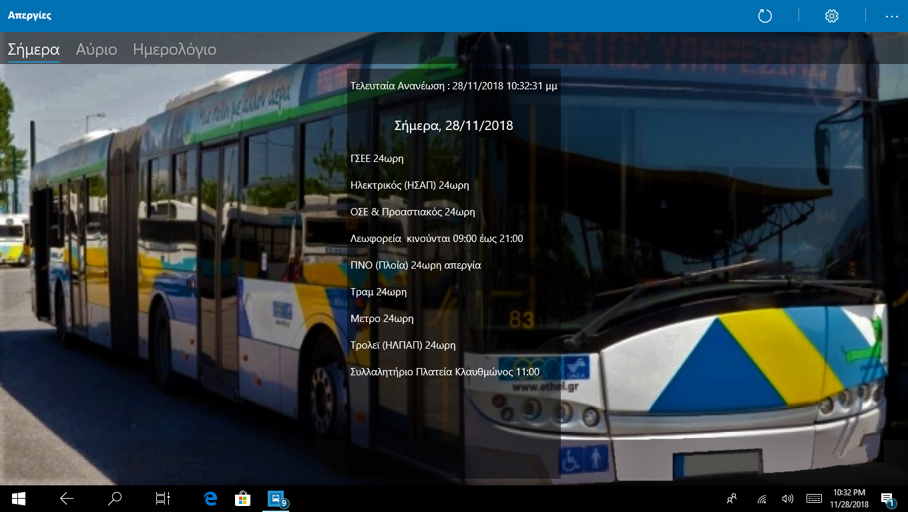
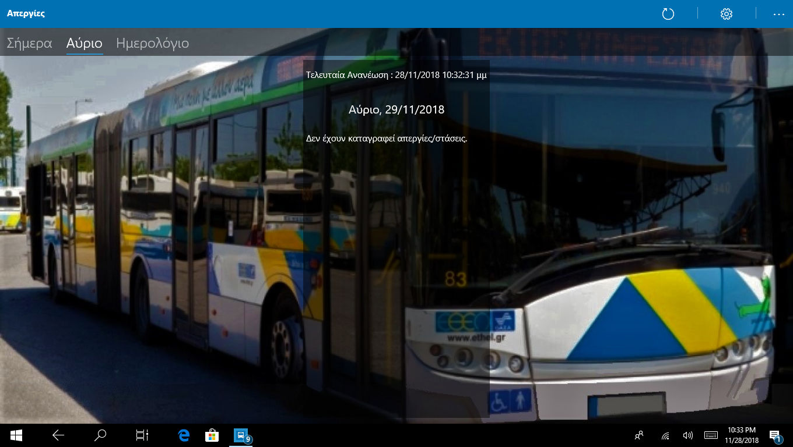

Απεργίες
Ενημερώσεις και λίστες απεργιών — εύκολο και γρήγορο.
Screenshots


Περιγραφή
Η εφαρμογή «Απεργίες» συγκεντρώνει ανακοινώσεις απεργιών και τις παρουσιάζει με φιλικό τρόπο — ειδοποιήσεις, λίστες και φίλτρα ανά περιοχή.
Χαρακτηριστικά
- Λίστες ανά ημερομηνία και περιοχή
- Ειδοποιήσεις
- Εύκολη πλοήγηση